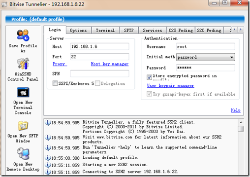
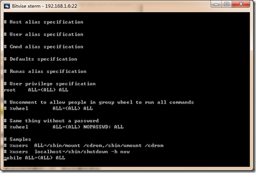
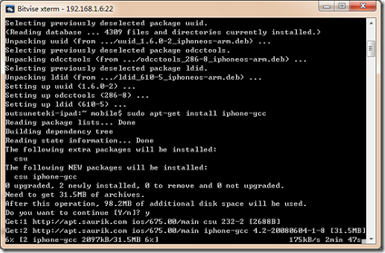
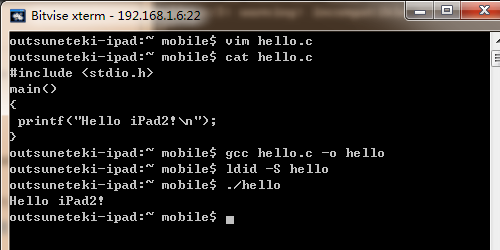

为ipad2安装和配置gcc编译环境
1、首先你必须越狱，网上教程也很多，这里就不多讲了。
声明：越狱可以让你的ipad运行无签名的可执行文件，但可能损害你的设备，对于你设备可能出现的问题，本文不负任何责任！
好了，现在我假设你的设备已经越狱成功。很棒，下面请让你的ipad接入一个无线网络，后续的步骤也可能需要网络 ：）
如果你想使用电脑来SSH 到iPad2 你可能需要使用Cydia来安装openssh。
记得安装完Openssh要修改root和mobile用户的密码哦！（默认是alpine）
PC端可以可以使用putty 和winscp配合来访问iPad2，MAC系统或者Linux可以使用系统自带的终端 ssh root@192.168.1.6 。我这里使用的是Tunnelier，它集成了putty 和winscp两款工具的功能，个人感觉很好用！
可能用的的工具：
Tunnelier （地址：www.bitvise.com/tunnelier）推荐
putty （地址：www.putty.org/）
winscp（地址：http://winscp.net/）
需要在cydia安装一些必要的工具：
Openssh（提供SSH 服务）
wget (下载工具）
unzip 及 zip (解压缩及压缩打包工具）
sudo（允许普通用户执行root命令的工具）
make（很强大的工具）
Aptitude 及 APT 0.6 Transitional (deb 包工具，允许执行apt-get等命令)
是不是觉得iPad2越来越像台电脑了呢？ ：)
2、使用Tunnelier SSH到你的iPad
Host：添入你的iPad的IP地址
Prot：默认是22
Username：root（用root或者mobile用户登录，这里是root）
Password：默认是alpine，如果修改过请填入修改后的密码（再次提醒一定要修改root密码！）
SPN：不填
为了系统的安全性，建议平时使用普通用户登录。
将mobile用户加到sudo组，在命令行输入：
$ visudo这个和vi的用法一样，移动光标到最后一行，按A在最后添加
mobile ALL=(ALL) ALL
如图：
使用:wq或者ZZ保存并退出vi。
以后就可以用 mobile用户登录并使用sudo命令来执行一些危险的操作了！
3、开始安装
再次使用mobile用户重新SSH到iPad后，在终端输入以下命令：
wget http://apt.saurik.com/debs/libgcc_4.2-20080410-1-6_iphoneos-arm.deb
sudo dpkg -i libgcc_4.2-20080410-1-6_iphoneos-arm.deb
sudo apt-get install iphone-gcc ldid
#注：安装ldid为应用程序签名(防止在应用启动时被iOS杀掉)

安装 libSystem：
cd /usr/lib/
sudo ln -s libSystem.B.dylib libSystem.dylib下载并安装SDK(IPAD)头文件:
下载sys32Libheader.tgz 文件到 iPad 路径 /var
点击下载
也可以将下载下来的tgz包通过sftp传到/var 目录，终端中输入代码：
cd /var
tar xzvf sys32Libheader.tgz
此时gcc的默认include和lib目录里还没有那些sys32的内容。继续如下步骤：
使用电脑ssh入ipad，或者在ipad里面使用终端，在mobile目录下生成 .bash_profile文件：
cd /private/var/mobile
vim .bash_profile
填入如下内容
C_INCLUDE_PATH=/var/sys32/usr/include
export C_INCLUDE_PATH
CPLUS_INCLUDE_PATH=/var/sys32/usr/include
export CPLUS_INCLUDE_PATH
LIBRARY_PATH=/var/sys32/usr/lib
export LIBRARY_PATH
使用:wq或者ZZ保存并退出vim。
切换成root用户：
su – root
修改/etc/profile文件，在里面加入一行
source /var/mobile/.bash_profile
切换回mobile用户：
su – mobile
此时gcc环境已经配置好了！
使用gcc 测试 hello.c
cd /private/var/mobile
vim hello.c输入下面的内容：
#include
main()
{
printf("Hello iPad2!\n");
}使用:wq或者ZZ保存并退出。
编译并执行：
gcc hello.c -o hello
ldid -S hello
./hello
#为编译后的应用程序签名的方式是，运行:ldid –S [Aplication];
哈哈，看到iPad2上成功的第一次执行了自己写的代码！
附图：
 微信
微信 支付宝
支付宝